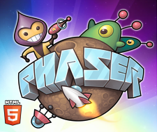

About this project
Game Features
Story
En mitad del desierto nace una ciudad de la mano de ambiciosos mercaderes y cazatesoros ... ¡Adéntrate en las pirámides y trae de vuelta valiosos tesoros para vender en el mercado negro!

Game Modes
Compite por la puntuación máxima robando tesoros y derrotando a los guardianes de la pirámide.
Multiplayer
Lucha contra otros caza tesoros por ver quién logra escapar de la pirámide con más tesoros ... y con vida.
Documentation
About us
Somos un grupo de alumnos de Diseño y Desarrollo de Videojuegos en la URJC, y esta es nuestra práctica para la asignatura de Juegos en Red.
Framework & libs
En el cliente, el juego está escrito en javascript sobre Phaser, un framework open-souce de desarrollo de juegos web. En el lado del servidor, escrito en Java, hacemos uso de Spring sobre Java EE en un servidor web Tomcat.
Other resources
Todas las imágenes de la web y del juego han sido creadas desde 0 por el equipo. Algunos sonidos y música han sido recogidos de páginas sin copyright.